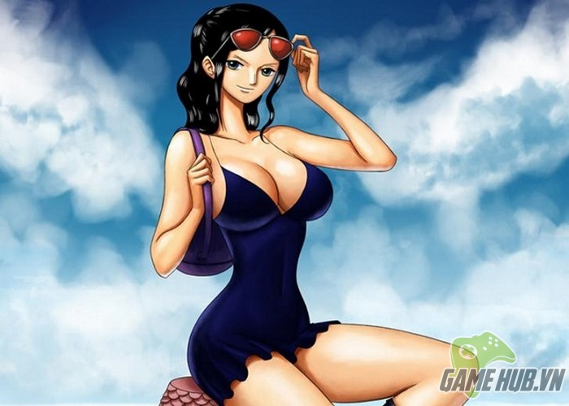

BĂNG HẢI TẶC MŨ RƠM.
Thuyền trưởng: Monkey D.Luffy.
Monkey D. Luffy "Mũ Rơm " là một nhân vật chính
trong manga One Piece đình đám của tác giả Eiichiro Oda.
Luffy là người sáng lập và là thuyền trưởng của băng Hải tặc Mũ Rơm, Ước mơ của cậu là trở thành Vua Hải Tặc
Đầu rêu Roronoa Zoro.
Xuất thân từ một "Thợ săn Hải Tặc", Roronoa Zoro là thành viên đầu tiên của băng hải tặc Mũ rơm.
Là kiếm sĩ cũng như là bậc thầy kiếm thuật duy nhất trong nhóm,
sử dụng thành thục 3 thanh kiếm cùng lúc (Tam kiếm phái)
và được biết hiện tại anh có thể sử dụng hai loại Haki.
Đồng thời là một trong những thành viên mạnh nhất trong nhóm.

Con ghẻ Vinsmoke Sanji.
Vinsmoke Sanji (Chân đen) với vai trò là đầu bếp của Băng Hải tặc mũ rơm.
Được biết anh cũng có khả năng sử dụng được hai loại Haki.
Đồng thời là một trong 03 người mạnh nhất nhóm,
sức mạnh của anh
thường được so sánh với Roronoa Zoro.
CÁC THÀNH VIÊN KHÁC...

Đứa con của thời tiết Nami.

Nhà khảo cổ học Nico Robin.

Thợ đóng tàu Franky.

Bác sĩ Tony Tony Chopper.

Nhạc công Brook.
Thiện xạ Usopp.